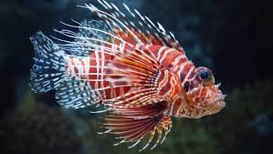

Penyu
Penyu adalah hewan yang banyak di temukan bertelur di beberapa pesisir pantai di Indonesia sejak dahulu

Ikan badut ini dapat dikenali dengan warna jingganya, ikan ini tumbuh mencapai 8 cm serta termasuk dalam ikan terpopuler di dunia.

lion fish atau volitans adalah ikan bebrais milik keluarganya yang scorpainde terjemahan harfiah berarti ikan kalajengking

ikan moorish idol adalah salah satu ikan yang cukup populer di kalangan ara hoobish ikan hias karna bentuknya yang unik dan pola warna yang menarik